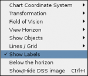
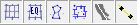
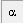
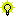
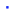

The Chart Menu
 The picture cdc_menu_chart.png should be updated with the current SkyChart version. It doesn't affect the usabillity of this document.
The picture cdc_menu_chart.png should be updated with the current SkyChart version. It doesn't affect the usabillity of this document.

The Chart Menu enables you to configure the displayed chart according to your needs in a fast and easy way. If a more detailed configuration is needed, take a look at Setup → Chart, Coordinates
{kind=link}
Chart Coordinate System
From the menu: Chart → Chart Coordinate Sytem → ….
Here you can choose from
- Equatorial Coordinates,
- Azimuthal Coordinates,
- Ecliptic Coordinates
- Galactic Coordinates.
These functions are identical with the coordinate system group of icons at the left hand side bar.
With Setup → Chart, Coordinates → Chart coordinate system you can configure the equinox and epoch as wel.
Transformation
From the menu: Chart → Transformation →
If you want to mirror or rotate the chart, you can make those settings with this submenu by clicking the appropriate line. Rotating the chart by this way goes in steps of 15º of arc.
A click on one of the corresponding icons from the transfomation group in the lower part of the tool bar at the left has the same result as a click on a line of this menu. You can rotate in steps of 1º by a click on this icon while pressing the shift key.
Field of Vision
From the menu: Chart → Field of Vision →
Here you can set the width/hight of the displayed field of vision of your active chart to a predefined value (in degrees of arc).
This works identical with the upper field of vision group icons at the right hand side tool bar.
You can change the default settings for the fields of Vision according to your preferences by Setup → Chart, coordinates → Field of Vision.
View Horizon
From the menu: Chart → View Horizon → [Direction]
If you are interested in objects situated in one of the cardinal directions, simply click the appropriate line to make your choice:
- North,
- South,
- West,
- East.
Setting the chart by these methods to one of the cardinal directions, also forces the chart to use the Altitude-Azimuth coordinate system.
This works identical with the lower horizon group icons at the right hand side tool bar.
To read about how to display your local horizon, click here.
Show Objects
From the menu: Chart → Show objects → Show …
By every click on one of these lines you check or uncheck the display of an entire category of objects.
In this submenu you can decide which of the object types you want to display on the chart by checking or unchecking the listed items in the submenu. These items are:
- Show Stars
- Show Deep Sky Objects
- Show Pictures
- Show Lines
- Show Planets
- Show Asteroids
- Show Comets
- Show Milky Way
This works identical with the icons from the Object Group A or Object Group B at the left of the object tool bar, on top of the chart.
These items can also be found in the Display lines and Solar system tabs.
It is important to have set the right date/time and place of observation for a proper display of these items on your chart.
Lines - Grid
From the menu: Chart → Lines / Grid →
When you want to activate or deactivate the display of some grids or lines on the chart, you can do this by checking or unchecking the listed items of this submenu:
- Show Coordinate Grid
- Add Equatorial Grid
- Show Constellation Line
- Show Constellation Limit
- Show Galactic Equator
- Show Ecliptic
- Show Mark
This works identical with the  and  icons in the object tool bar, on top of the chart.
icons in the object tool bar, on top of the chart.
You can configure the displayed type of lines in the tab Lines from Setup → Display. You can configure the displayed dimensions of the eyepiece and CCD in the tabs Finder circle (Eyepiece) and Display rectangle (CCD) from Setup → Display.
You can configure the grid spacing from the menu by Setup → Chart, Coordinates → the Grid Spacing tab.
{kind=link}
Show Labels
From the menu: Chart → Show Labels
This works identical with the  icon in the pictures group of the object tool bar.
{kind=link}
Activating this item will show labels for all objects according to the configuration from Setup → Display → Labels.
Below the horizon
From the menu: Chart → Below the Horizon
When you activate this, the chart will display you all of the sky as if the Earth and everything is transparent. This way you can view objects which are below the horizon for the configured observatory and the time set. By a click on the line (check or uncheck) from the menu or icon you switch this behaviour on or of. Only available when your chart is set to Alt-Az coordination grid.
This works identical with the icon in the marks group of the object tool bar.
{kind=link}
Show-Hide DSS image
From the menu: Chart → Show/Hide DSS image
If you previously loaded a FITS formatted image, you can switch its display on or off by a click on this line. An interesting feature is the blink icon, to 'blink' the loaded image with the original chart content.
To read more about how to load a FITS picture, click here.
To read more about the configuration of the usage of DSS, click here.
To read more about the configuration of the DSS resources to download those images, press here.
The only shortcut to show or hide the image is to press CTRL-I.
{kind=link}
Number of Stars
From the menu: Chart → Number of Stars → [More/Less] Stars
This works identical with the or  icons
in the magnitude group of the main bar.
{kind=link}
{kind=link}
Here you can choose to increase or decrease the number of stars and Solar system objects by changing the displayed magnitude limit by 0.5.
Related to:
Setup → Chart, Coordinates; the Object Filter tab
When the Filter Stars checkbox is unchecked, the stars magnitude group buttons lose their function.
Number of nebulae
From the menu: Chart → Number of Nebulae → [More/Less] Deep Sky
This works identical with the or icons
in the magnitude group of the main bar.
{kind=link}
{kind=link}
Here you can choose to increase or decrease the number of deep sky objects by changing the displayed magnitude limit by 0.5.
Related to:
Setup → Chart, Coordinates; the Object Filter tab
When the Filter Deep Sky Objects checkbox is unchecked, the deep sky magnitude group buttons lose their function.
Get DSS Image
From the menu: Chart → Get DSS Image
This works identical with the  icon in the pictures group of the object bar.
icon in the pictures group of the object bar.
You can load FITS formatted pictures from RealSky, the online Digital Sky Survey (DSS) site, from your SAC pictures catalog [program installation directory/data/pictures/sac or any other source.
Most users will use this feature to load a FITS-picture from the Digital Sky Survey (DSS) site. The size of pictures that you request are limited by the field of vision. Usually, you can't retrieve pictures when you set SkyCharts to a FOV larger than two degrees of arc. The larger the FOV, the greater chances are that your request times out, or isn't supported by the server at all. You need to realize that it takes a lot of CPU power at the server site to generate a picture, you have to be patient.
You can skip to push the download button every time you want to retrieve data from online resources. To do so, you need to uncheck the checkbox “Ask confirmation before any Internet connection” in the first tab of the dialog box, retrieved from the menu by Setup → Internet.
To read more about the display of these images, click here.
To read more about the configuration of the usage of RealSky and DSS, click here.
To read more about the configuration of the DSS resources to download those images, press here.